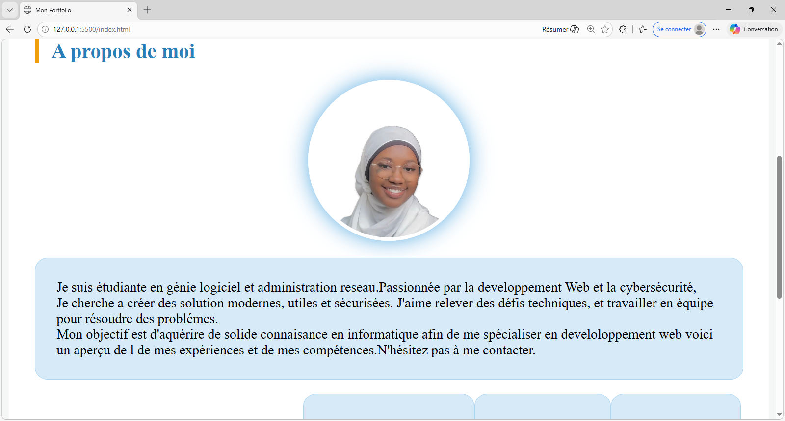
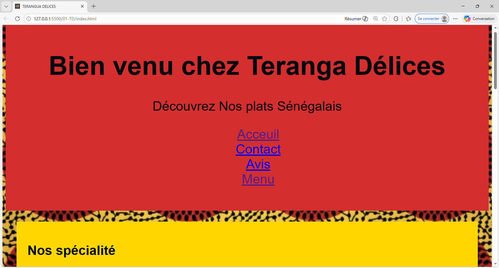
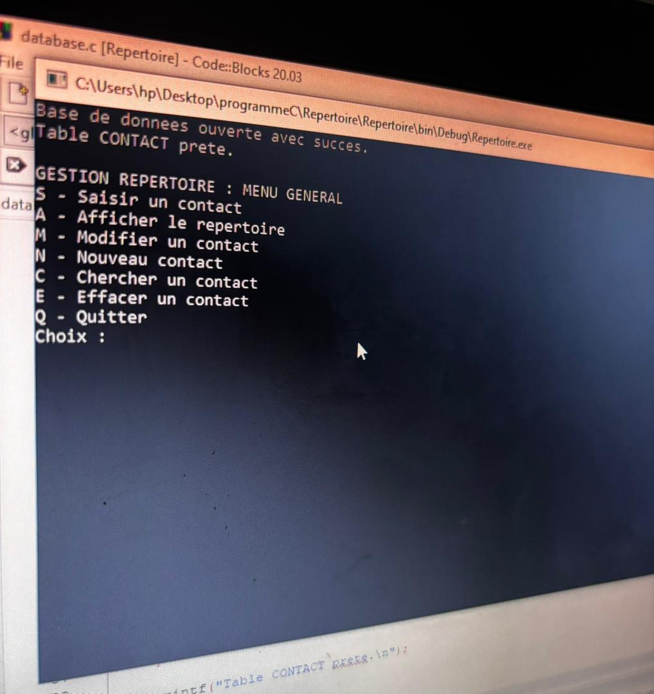
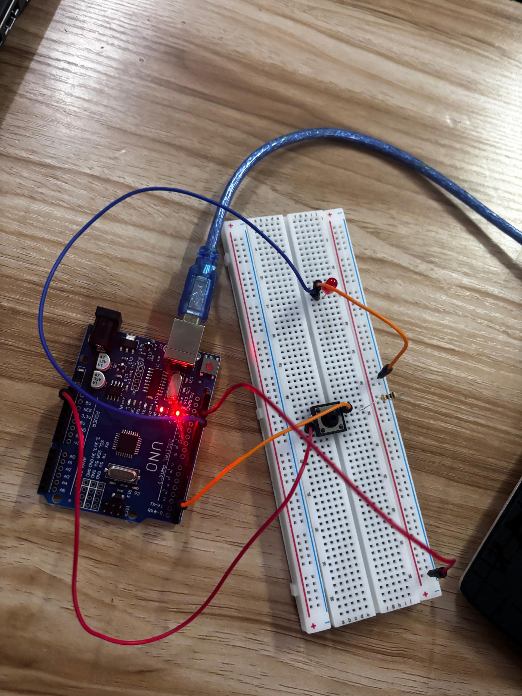
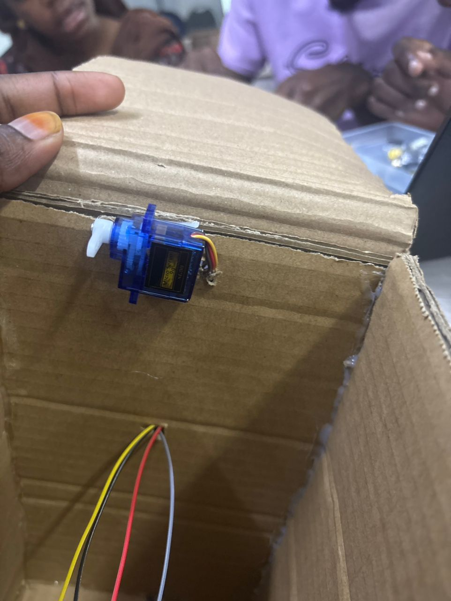
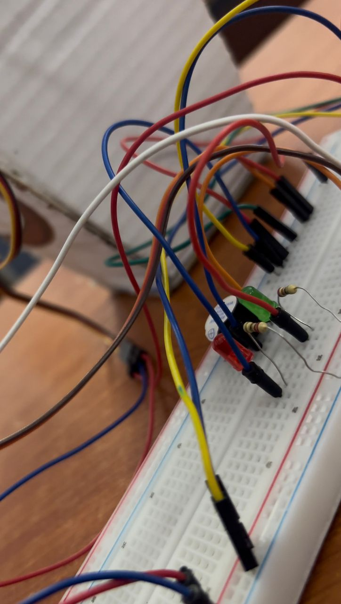

Mes projets
Etant une etudiante en génie logiciel, j’ai réalisé plusieurs projets académiques
-Développement web :
EN j'ai realiser plusieurs site web,notamment ces deux-là que je vous présente ici.
À travers ces projets, j’ai appris à créer des sites simples, bien organisés et faciles à utiliser.


-Programmation :
En programmation j'ai pu realisant unr applicationpermettant de gérer un repertoire de téléphone.

-Systeme embarqué :
En systeme embarqué j'ai realiser une poubelle intelligente quisouvre par detection de mouvementet
d'autre projet en paralelle.



Expériences
Je n’ai pas encore eu d’expérience professionnelle ou associative,
mais j’aimerais m’impliquer dans le secteur du develoloppement web
pour développer des compétences en organisation, travail d’équipe,
communication, informatique… Je suis vraiment motivée pour apprendre et contribuer.
mais j’aimerais m’impliquer dans le secteur du develoloppement web
pour développer des compétences en organisation, travail d’équipe,
communication, informatique… Je suis vraiment motivée pour apprendre et contribuer.